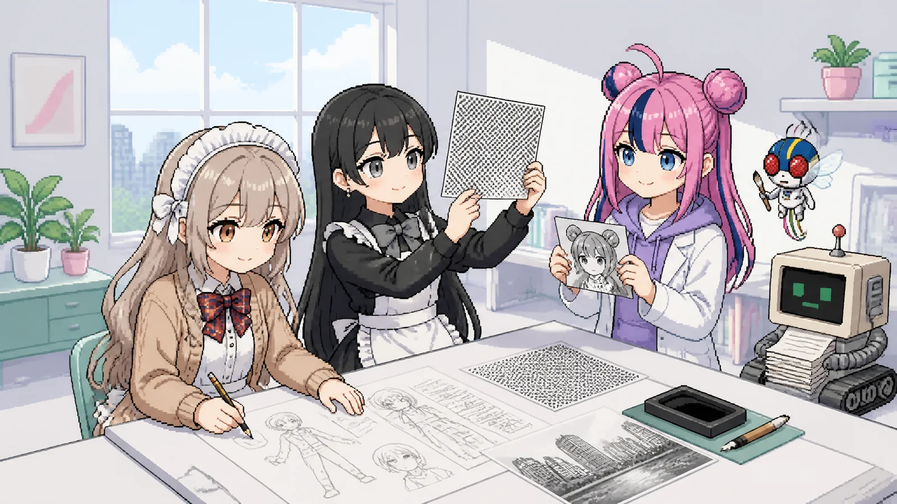
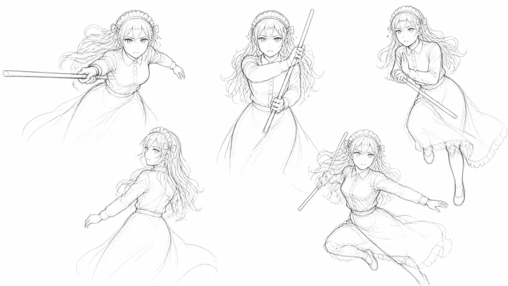
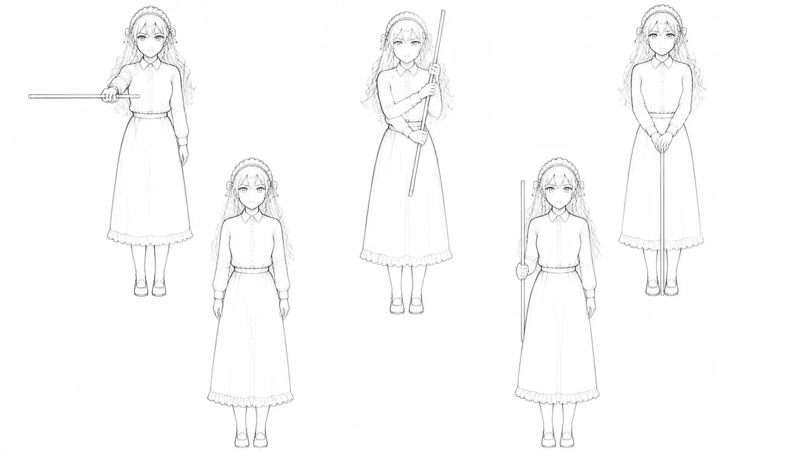
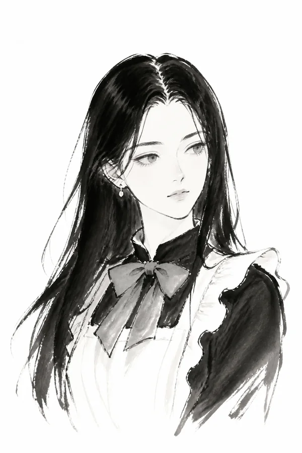
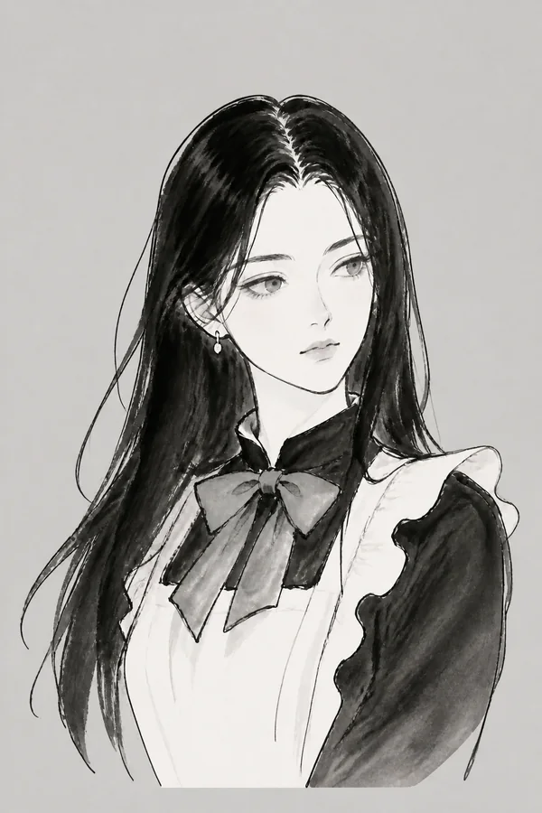
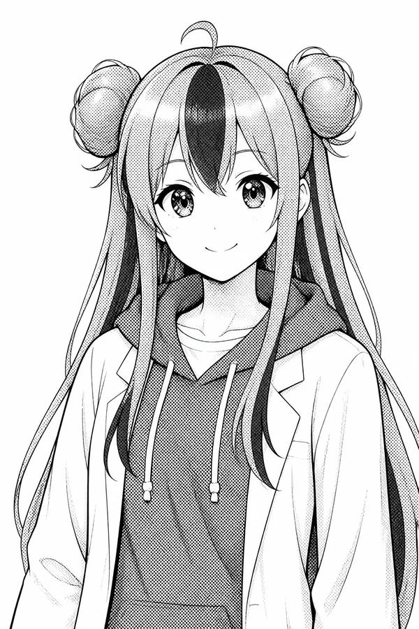

오늘의 과제

박사오늘은 색을 모두 뺀다. 흑백 러프, 망점, 수묵, 그리고 컬러와 흑백 사이를 다녀오자.

주판봇컬러 그림을 흑백으로 바꾸면 끝입니다! 버튼 하나면 됩니다!

초파리 연구원그러면 머리와 옷이 같은 회색이 돼. 흑백은 선과 밝기로 따로 설계해야 해.

모아색이 없어도 머리띠랑 리본은 선으로 남겠죠?

이번에는 색을 모두 뺍니다. 주판봇은 컬러 그림을 흑백으로 바꾸기만 하면 된다고 생각합니다. 초파리는 흑백에서는 선의 움직임, 명암 방법, 여백, 밝기 차이가 따로 필요하다고 말합니다. 색 없이도 같은 사람으로 보일까요?
그림 실력·코드·수식을 몰라도 됩니다. 실험을 눌러 보며 따라오세요.
몸 전체를 지나는 한 줄(움직임 선)을 먼저 긋고 그 위에 몸을 얹으면, 선 몇 개로도 동작이 읽힙니다

학교 수학으로 보면 — 나눗셈과 비 — 크기가 다른 그림끼리도 비교할 수 있게 길이로 나눕니다.
| 식 조각 | 뜻 |
|---|---|
| 양 끝 사이 직선 | 머리에서 발끝까지 |
| 가장 먼 거리 | 곡선이 가장 불룩한 곳 |
| 결과 | 0.1 차분 · 0.25 힘 있음 · 0.4 과장 |

체육 시간에 '공 던지는 자세'를 막대 인형으로 그려 보면, 몸이 활처럼 휜 선 하나만 있어도 무엇을 하는지 압니다.
액션 장면의 콘티와 러프는 흑백으로, 움직임 선 위에 빠른 선을 겹쳐 그립니다. 여러 동작을 한 장에 모은 러프 시트를 만들고, 가장 잘 읽히는 동작만 골라 깔끔한 선화로 옮깁니다.


휜 정도 0.1 안팎은 차분한 자세, 0.2~0.3은 힘이 실린 자세, 0.4 가까이는 과장된 동작입니다.
러프 선은 여러 번 겹쳐 그어도 괜찮습니다. 동작이 읽히는지가 먼저이고, 깔끔한 선은 그 위에 한 번만 긋습니다.
작업에서는 흑백 러프 시트에 동작을 여러 개 그리고, 가장 잘 읽히는 것만 골라 선화로 정리합니다.

AI에게 흑백 러프 동작 시트를 받았는데 다섯 동작이 모두 거의 똑같이 서 있는 자세입니다. 괜찮을까요?
움직임 선이 휘지 않은 자세들입니다. 'each pose with a strongly curved line of action: lunging, dodging, leaning back'처럼 동작마다 몸의 휜 방향을 적어 다시 받으세요.
같은 그림자 자리를 단색, 망점, 해칭, 먹칠로 채워 보며 비율과 인상을 비교합니다
학교 수학으로 보면 — 원의 넓이(π × 반지름²)와 비율.
| 식 조각 | 뜻 |
|---|---|
| π | 약 3.14 |
| 점 반지름 | 점이 클수록 어둡다 |
| 격자 한 변 | 점 사이 간격 — 좁을수록 어둡다 |
잡지 인쇄물을 확대해 보면 하늘의 파랑도, 피부의 분홍도 작은 점의 크기로 만든 것입니다.
흑백 만화를 컬러 애니로 옮길 때는 망점의 덮는 비율을 보고 그림자 단계를 정합니다. 반대로 컬러 그림을 흑백 굿즈로 만들 때는 색의 밝기를 망점 비율로 바꿉니다(3부 4단계).

그림자 자리는 그대로인데 채우는 방법만 바꿔도 전통이 바뀌어 보입니다.
먹칠은 대비가 강해 극적이지만 얼굴 그림자에 쓰면 표정이 사라집니다. 머리카락과 옷에 먼저 씁니다.
작업에서는 그림 한 장에 명암 방법을 하나(많아야 둘)로 정합니다.
흑백 만화풍을 요청했더니 망점과 해칭과 회색 그라데이션이 한 얼굴에 섞여 나왔습니다. 써도 될까요?
명암 방법이 섞여 어디가 그림자인지 흐립니다. 'black and white manga, screentone dots only for shadows, no gradients, no cross-hatching'처럼 한 가지 방법만 적으세요.
수묵·판화풍은 선을 끊고 비워 둔 곳(여백)으로 형태를 읽게 합니다
흰 종이에 붓펜으로 이름을 쓰면 획 끝이 갈라지는 자리가 생깁니다. 그 빈자리가 오히려 멋으로 보입니다.
수묵 느낌의 캐릭터 일러스트에서는 머리카락을 크게 먹으로 쓸고, 얼굴 윤곽은 턱 한쪽만 그리고 나머지는 비웁니다. 전통 판화풍으로 다시 그릴 때는 구름·물결 같은 반복 무늬를 배경에 둡니다.
선을 적당히 끊으면 붓의 손맛이 나고, 끊긴 자리를 보는 사람이 머릿속에서 잇습니다.
여백이 너무 적으면 붓을 쓴 일반 그림, 너무 많으면 형태가 무너집니다. 이 실험에서는 50~70%가 수묵 느낌입니다.
작업에서는 '어디를 비울지'를 먼저 정하고 그립니다. 머리카락의 먹과 얼굴의 여백이 대비를 이룹니다.
AI 수묵풍 그림에 옆으로 한자 같은 글씨와 붉은 도장이 들어갔습니다. 멋있는데 써도 될까요?
대부분 뜻이 없는 가짜 글씨입니다. 읽는 사람이 이상한 글을 보게 되고, 잘못된 뜻으로 읽힐 수도 있습니다. 'no calligraphy, no text, no seals, no stamps'를 넣어 다시 받고, 글씨가 필요하면 나중에 직접 넣으세요(7부 f8).
컬러 그림을 흑백 만화로 옮길 때는 색이 아니라 밝기를 지키고, 흑백을 컬러로 옮길 때는 밝기에 맞는 색을 고릅니다
학교 수학으로 보면 — 가중 평균 — 값마다 중요도(무게)를 곱해 더합니다.
| 식 조각 | 뜻 |
|---|---|
| 빨강·초록·파랑 | 각 0~255 |
| 0.299·0.587·0.114 | 사람 눈이 느끼는 밝기의 무게(합 1) |
| 회색값 | 0 검정 ~ 255 흰색 |
컬러 그래프를 흑백 프린터로 뽑으면 빨간 막대와 초록 막대가 구별되지 않아 범례가 쓸모없어지는 일이 있습니다.
흑백 원작을 컬러로 옮길 때는 원작의 먹·망점 밝기에 맞춰 색의 밝기를 고릅니다. 반대로 컬러 캐릭터를 흑백 굿즈로 만들 때는 붙어 있는 색의 회색값 차이가 40 이상이 되도록 망점이나 선으로 구별합니다.

흑백에서는 색이 아니라 회색값으로 구별됩니다. 붙은 두 색의 차이가 작으면 경계가 사라집니다.
차이가 작으면 한쪽의 밝기를 바꾸거나(밝기 조정), 망점·선 같은 무늬로 구별합니다.
작업에서는 캐릭터 색표에 색마다 회색값을 함께 적어 두면 흑백 인쇄 때 바로 확인할 수 있습니다.
AI에게 컬러 캐릭터를 흑백 만화풍으로 바꿔 달라고 했더니 머리와 옷이 같은 회색 덩어리가 됐습니다. 어떻게 할까요?
회색값이 비슷한 색이 붙어 있어서입니다. 'black and white manga: hair in light screentone, hoodie with darker screentone, clear outlines between them'처럼 부위마다 다른 밝기나 무늬를 지정하세요.
이 부에서 배운 원리를 그림 생성 AI(Genspark 등)로 직접 확인합니다. A는 이 페이지 그림을 실제로 만든 프롬프트, B는 원리를 하나 빼거나 바꾼 비교용 문장입니다.
참고 그림 내려받기: haru_anime_base · sia_anime_base · moa_anime_base · haru_sheet · sia_sheet · moa_sheet · doctor_sheet · fruitfly_sprites_6 · jupanbot_ref_genspark_v0 · pixel_style_ref_prev_cover
움직임 선부터 잡은 흑백 러프 동작 다섯 개를 받고, 동작마다 몸이 휘었는지 확인합니다.
첨부: moa·sia·haru anime_base와 sheet
Illustration, wide 16:9. Art style: black and white pencil gesture sketches: quick overlapping rough lines, a strongly curved line of action through each body, no color, no shading except a few light strokes; her headband and the ribbon over her LEFT ear kept as simple lines; hands empty or holding a plain wooden stick, no weapons Match the attached reference images exactly for identity (hair shape and color, eye color, accessories). All characters are adults in their twenties (the Professor is an adult man in his thirties); modest outfits exactly as described. Only the drawing style changes between panels; the person stays the same. A black-and-white rough pencil sketch sheet of Moa (adult maid intern, long ash-beige wavy hair, white frilled maid headband with a white ribbon over her LEFT ear, amber eyes) in five different action poses (lunging forward, blocking, stepping back, turning, leaping), wearing a simple long-sleeved blouse and long skirt. Plain white background behind the panels. No text, no letters, no numbers, no calligraphy, no seals or stamps, no logos, no watermark, no revealing clothing, not childlike, no school uniform, not resembling any existing anime, comic or game character, do not imitate any specific artist or studio.
Same image, keep the same framing. Change only: make every pose stand straight and stiff with no curve through the body. Still no text.

실제 결과: A는 몸이 크게 휜 다섯 동작, B는 모두 곧게 선 자세로 나와 움직임 선의 차이가 가장 분명한 비교가 됐습니다.
끊긴 선과 여백으로 수묵 느낌을 내고, 글씨·도장이 들어가지 않는지 확인합니다.
첨부: moa·sia·haru anime_base와 sheet
Illustration, vertical 2:3. Art style: black ink brush painting on white paper: bold sweeping brush strokes for the hair, only a few broken thin lines for the face outline and features, about two thirds of the picture left empty white; no calligraphy, no seals Match the attached reference images exactly for identity (hair shape and color, eye color, accessories). All characters are adults in their twenties (the Professor is an adult man in his thirties); modest outfits exactly as described. Only the drawing style changes between panels; the person stays the same. Chest-up portrait of Sia (adult maid intern, long straight jet-black hair, no headdress, gray eyes, small silver earrings), wearing charcoal-black long-sleeved maid dress, large gray bow at the collar, long white frilled apron, looking slightly to the side, calm. Plain white background behind the panels. No text, no letters, no numbers, no calligraphy, no seals or stamps, no logos, no watermark, no revealing clothing, not childlike, no school uniform, not resembling any existing anime, comic or game character, do not imitate any specific artist or studio.

Same image, keep the same framing. Change only: draw every outline as a continuous unbroken line and fill the background with a flat light gray wash, no empty white space. Still no text.

실제 결과: B는 배경이 회색으로 채워지고 머리 윤곽선이 이어져 여백의 느낌이 줄었습니다. 차이는 크지 않지만 요청한 방향입니다.
이 부의 원리를 내 손으로 프롬프트에 옮겨 보는 과제 두 개입니다. 과제마다 목표 → 순서 → 넣을 프롬프트 → 확인할 것 → 예상 결과 → 자주 생기는 문제 순서로 적었습니다. 예상 결과 그림은 아래 프롬프트로 실제로 만든 그림입니다. 요청과 다르게 나온 곳은 '실제 결과'에 그대로 적었습니다. 결과는 매번 조금씩 다르니, 그림이 똑같지 않아도 '확인할 것'이 맞으면 성공입니다.
목표하루를 흑백 만화풍으로 만들되, 회색값이 비슷한 분홍 머리와 라벤더 옷을 망점 밝기로 구별하게 적습니다.
왜 이 연습인가분홍 머리(회색값 약 170)와 라벤더 옷(약 182)은 흑백에서 거의 같은 회색이 됩니다(3부 4단계). 부위마다 다른 밝기를 적지 않으면 둘이 붙어 버립니다.
첨부할 참고 그림: refs/haru_anime_base.png, refs/haru_sheet.png — 참고 그림은 위 직접 만들어 보기에서 내려받을 수 있습니다.
Illustration, vertical 2:3. Art style: black and white manga style for a printed postcard: clean black ink outlines; hair in light dotted screentone, hoodie in clearly darker dotted screentone, lab coat left white, so that hair and hoodie are easy to tell apart; no gray gradients Match the attached reference images exactly for identity (hair shape and color, eye color, accessories). All characters are adults in their twenties (the Professor is an adult man in his thirties); modest outfits exactly as described. Only the drawing style changes between panels; the person stays the same. Chest-up portrait of Haru (adult lab assistant, long straight pink hair with navy streaks and a thick navy streak down the center of the bangs, two round hair buns on top, small ahoge, big blue eyes), wearing lavender hoodie with white drawstrings over a white t-shirt, open white knee-length lab coat, cheerful smile. Plain white background. No text, no letters, no numbers, no calligraphy, no seals or stamps, no logos, no watermark, no revealing clothing, not childlike, no school uniform, not resembling any existing anime, comic or game character, do not imitate any specific artist or studio.

실제 결과: 성공. 머리(옅은 망점)·후드(진한 망점)·랩코트(흰색)가 밝기로 나뉘어 흑백에서도 구별됩니다.
| 문제 | 이렇게 고칩니다 |
|---|---|
| 머리와 후드가 같은 회색이다 | 'Change only: hoodie in much darker screentone'. |
| 앞머리 가운데 줄이 사라졌다 | 'a dark stripe down the center of the bangs'를 덧붙입니다. |
| 회색 그라데이션이 섞였다 | 'screentone dots only, no gradients'. |
더 해 보기같은 그림을 컬러로 다시 받아 두 장을 나란히 놓고, 흑백판의 밝기가 컬러판의 어느 색에 해당하는지 짝지어 보세요.
| 항목 | 주판봇 | 초파리 |
|---|---|---|
| 닮음(같은 사람으로 보이나) | 5 | 9 |
| 원리(선·명암·여백·밝기) | 2 | 9 |
| 자연스러움 | 4 | 8 |
| 합계 | 11 | 26 |


점수는 이야기 속 예시입니다. 실제 그림을 평가한 값이 아닙니다.
| 주제 | 한 줄 | 작업에서는 |
|---|---|---|
| 움직임 선 | 휜 정도 = 가장 먼 거리 ÷ 양 끝 직선 | 러프는 움직임 선부터, 정리 선은 마지막 |
| 명암 처리 | 단색·망점·큰 점·해칭·먹칠, 덮는 비율 = π × 반지름² ÷ 한 변² | 한 그림에 한 방법 |
| 붓선과 여백 | 끊김과 비워 둔 곳으로 형태를 읽게 한다 | 비울 곳을 먼저 정한다, 가짜 글씨 금지 |
| 흑백과 컬러 | 회색값 = 0.299R + 0.587G + 0.114B | 붙은 색의 회색값 차이를 본다 |

이 페이지에 나온 개념·방법·비유·쓰임을 모았습니다. 검색하고, "설명 보러 가기"로 본문에 돌아갑니다.
지식 색인을 출처와 함께 파일로 내려받습니다. 서지 관리는 BibTeX·RIS, 온톨로지 편집은 Turtle, 그래프 도구는 CSV, 여러 페이지 합치기는 kg.json입니다.